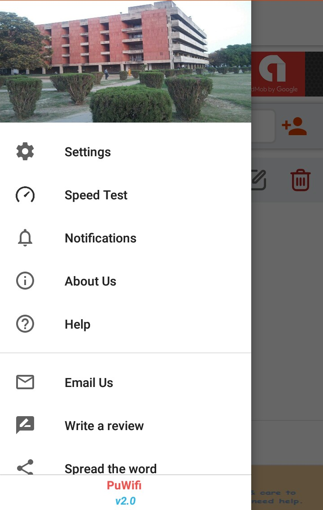

<div class="pw-screen-margin">
    <div class="pw-app__text-content">
        <span class="pw-app__title">
            So, What is PuWifi?
        </span>
        <p>
            PuWifi is a mobile application for both platforms Android and iOS that enables
            <b>Panjab University Campus</b> students to connect whith the Campus wifi(PU@Campus). It comes with the
            <b>Auto Connect</b> feature that can login your device automatically to PU wifi when you connect to PU Wifi.
            <br> Along with this, it will let you know what is happening in Panjab University, what are the events that are going
            on and what is the trending news.
        </p>
        <div class="carousel pw-about-app__screens" #carousel>
            
            
            
            
            
            
            
        </div>
        <span class="pw-app__title">
            Why’s it is hard to connect Pu@Campus?
        </span>
        <p>
            It is quite irritating to wait for the login page and then enter your login details on the
            <b>Sign in to Wi-Fi</b> page whenever you connect to Campus WiFi. And what is more difficult is remembering those
            random user names and passwords every time.
        </p>

        <blockquote class="pw-app__quote">
            Simplicity is the policy
        </blockquote>
        <p>
            PuWifi App follows the moderate UI design, where you just login once with your username and password and let the Wifi App
            save your account.
        </p>
        <p>
            When you are connected to PU@Campus Wi-Fi, you’ll just need to tap on
            <b>Connect</b> button after adding your account and you are now connected to Campus Wi-Fi with single tap. PuWifi
            App Auto-Connect Campus Wifi every time when you are in range of campus wifi.
        </p>
        <p>
            Just like that, Disconnecting your account is even easier with this app. After you connected, Then ‘Connect’ button will
            be converted to ‘disconnect’. As soon as you click it, you will be successfully disconnected.
        </p>
        <p>
            Download the PuWifi App now and makes your Panjab University Chandigarh Wi-Fi experience much better.
        </p>

        <span class="pw-app__title">
            What else you get?
        </span>

        <p>
            We are trying our best to provide you better services and the useful features. So these are some other fruits you get from
            PuWifi.
        </p>
        <ul class="pw-app__listing">
            <li>
                Simple Design & Interactive User Interface
            </li>
            <li>
                Auto Connect Campus Wifi
            </li>
            <li>
                Add/Delete multiple User Accounts
            </li>
            <li>
                Easy Connect/Disconnect Campus Wifi
            </li>
            <li>
                Change Password
            </li>
            <li>
                Network Speed Test (Wifi & Mobile Data)
            </li>
            <li>
                Notification of Campus Events and Popular News
            </li>
        </ul>

        <span class="pw-app__title">
            What next?
        </span>

        <p>
            Any idea or feature list that you think it should be implemente in the PuWifi App, do let us know. We are open to suggestion
            :).
        </p>
        <p>
            And if you face any problem or want to share your experience then we will be very happy to hear that and try to improve.
        </p>
        <p>
            You can mark us mail on
            <b>support@array151.com</b> or fill
            <a [routerLink]="['/contact-us']">this form.</a>
        </p>
    </div>


</div>